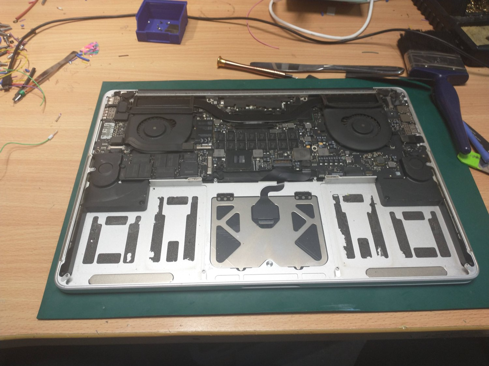
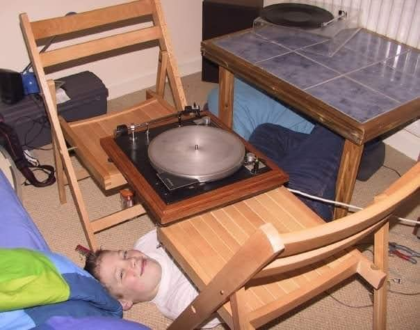
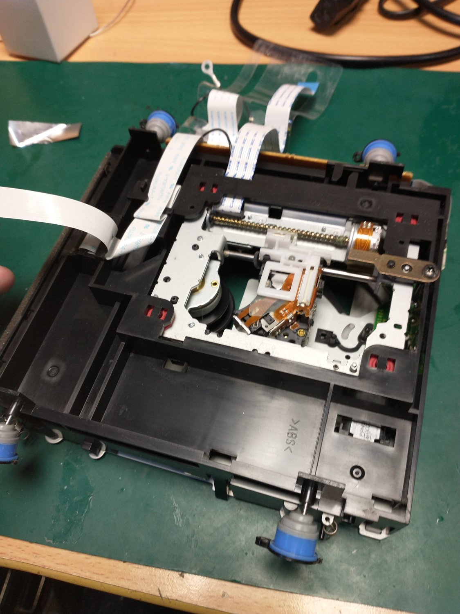

Component-level board repair
Tracking down and replacing the one failed part on a logic, control or audio board — a cracked resistor, a dead driver, a failed op-amp — instead of the whole board.
// logic, control, audio repaired
Repairs aren't our whole business — designing and building bespoke electronics is. But the same bench does both, so we happily bring back the gear we know best: retro and vintage kit, DJ decks and mixers (Pioneer and Technics especially), robotics, and one-off custom devices — all at board and component level. And when a repair genuinely isn't worth it, we'll often just build you a better one instead.
Bringing old gear the world gave up on back to working life is the job we enjoy most.
Pioneer CDJs and DJM mixers, Technics turntables — the gear that gets gigged hard.
Robots, motion and bespoke one-offs — repaired, upgraded, or rebuilt better.
We find and replace the one part that failed, rather than swap the whole board — the engineering a swap-shop can't offer.
We'll take on desktops and some laptop work too — but phones and tablets we leave to the high street, where you'll beat any price we could offer.
Board- and component-level work — retro, audio, robotics and custom — so one failed part doesn't mean the whole unit in the bin.
Plenty of repairs stop at "replace the mainboard". We go further: reading the schematic, tracing the signal and finding the one component that actually failed. Where there's no schematic, we work it out from the board itself.

Old audio, computers, synths and test gear — brought back to working life.
Pioneer and Technics decks and mixers — faders, jog wheels, motors and more.
Robots, arms, motion control and the electronics that drive them.
3D-printer boards, Arduino and Pi projects, synths, drones and one-offs.
Bespoke kit we or others built — fixed, upgraded, or remade better.
Anything Red Queen designs and builds — we repair what we make, for as long as you run it.
Two things bring people to us again and again: hardware everyone else gave up on, and the decks and mixers that take a real beating.
Age isn't a write-off. We recap tired boards, replace parts that haven't been made in decades with modern equivalents, rebuild worn connectors and — where the original chip is long gone — work out what it did and drop in something that behaves the same. The goal is simple: it switches on and works like it did, and keeps working.

Our founder has spent fifteen years as a working DJ and is an expert Pioneer and Technics repairer, so this is home turf. Decks and mixers live a hard life — spilt drinks, road cases, thousands of hours under the fingers: Pioneer CDJs and DJM mixers, and Technics SL-1200 / 1210 turntables. Scratchy faders and crossfaders, dead jog wheels, worn pitch faders, sticky buttons and pots, tonearm and motor issues — the faults that stop a set, sorted properly.

Drop it to us near Aztec West or post it over with a note on the fault and how it happened. The more you can tell us, the faster we find it.
We power it up safely, find the actual fault and tell you what it'll cost — and whether it's worth doing — before any work starts.
Component-level work at the bench: rework, replacement parts, connector and trace repair, firmware where it's needed.
We put it back on the bench and prove it works — under load and over time, not just a quick switch-on.
Back to you working, with a note of what failed and what we did. Kept the same, minus the fault.
A cross-section of what we take on. If your fault isn't here, ask — the odd ones are often the ones we most enjoy.
Tracking down and replacing the one failed part on a logic, control or audio board — a cracked resistor, a dead driver, a failed op-amp — instead of the whole board.
Hot-air and reflow work on surface-mount and BGA parts — reseating chips, reballing, and lifting and replacing components without cooking the board.
Torn USB and HDMI sockets, DC jacks, ribbon connectors and headers — the parts that take the physical abuse and pull the pads with them.
Robots, arms and motion rigs that have stopped behaving — controllers, drivers, sensors and wiring, traced and put right.
Bricked updates, corrupted flash and dead bootloaders. Where the board's fine and the software isn't, we reflash, recover or rebuild it.
When a component is discontinued and there's no replacement, we work out what it did and build a modern equivalent that drops straight in.
Some boards are cheaper to replace than to fix, some faults do too much damage to bring back reliably, and some parts simply can't be sourced any more. When that's the case, we'll tell you plainly rather than run up a bill on a lost cause.
You get an honest diagnosis first and a quote before we touch anything, so you always decide with the full picture in front of you. If we can't fix it, we'll say why — and point you at the sensible next step.
Apart from the diagnostic, you approve every cost before any work happens.
No repairs done just to make the invoice bigger.
Correct components, matched to spec, not the cheapest close-enough.
Fixed or not, you get it back — with an honest write-up.
Finding the fault takes real time, so there's a small diagnostic fee — but in almost every case you'll never actually pay it. Here's exactly when it applies.
If it turns out it can't be sensibly repaired, the diagnostic fee is waived — you pay nothing at all.
Go ahead with the repair and the diagnostic is rolled into the job, not added on top — one price, agreed before we start.
If we can fix it and you decide not to go ahead, the diagnostic fee applies — it covers the time spent finding the fault.
Send us a photo of the board and a line or two on the fault. We'll tell you whether it's fixable, roughly what it'll take, and whether it's worth doing — before you commit to anything.
Start a project →